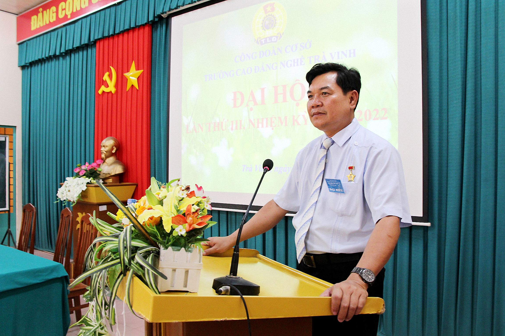
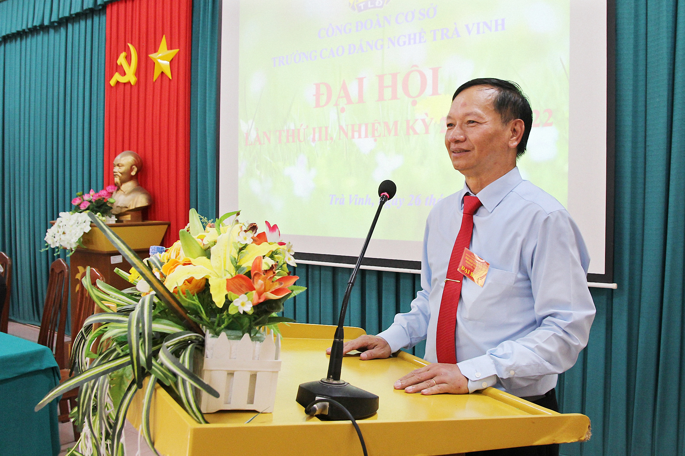
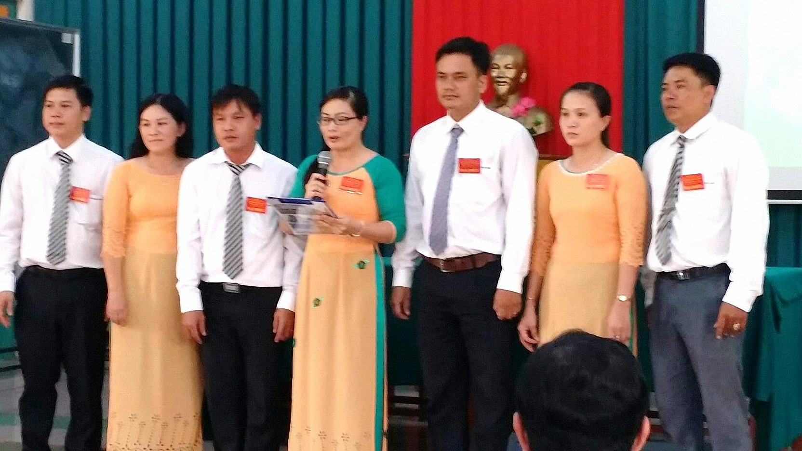
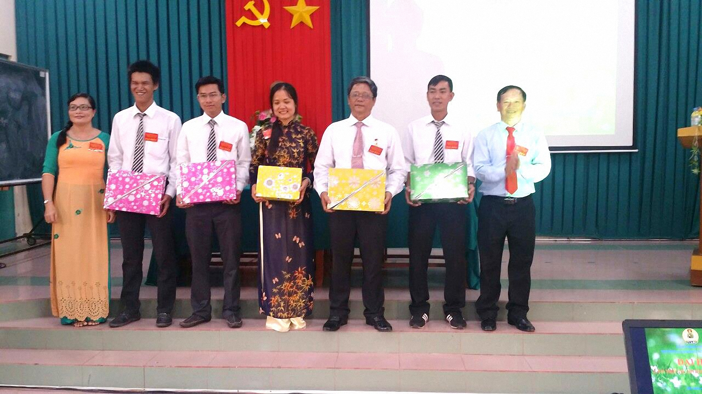
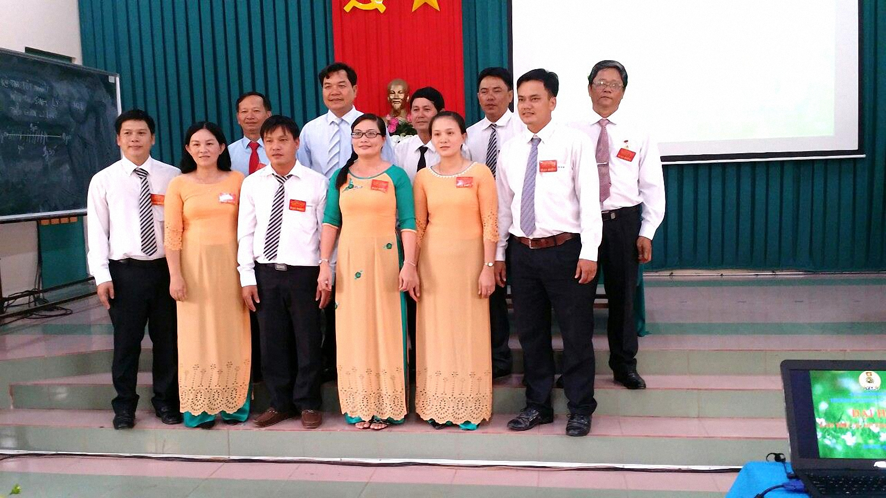

Thực hiện Kế hoạch số 04/HD-CĐVC, ngày 23/3/2017 của Ban Thường vụ Công đoàn Viên chức tỉnh Trà Vinh về việc Tổ chức Đại hội CĐCS nhiệm kỳ 2017-2022 và Đại hội Công đoàn Viên chức tỉnh Trà Vinh lần thứ III, nhiệm kỳ 2018-2023, sáng ngày 26/8/2017, Công đoàn cơ sở Trường Cao đẳng nghề Trà Vinh đã tổ chức thành công Đại hội Công đoàn cơ sở lần thứ III, nhiệm kỳ 2017-2022 với sự có mặt của 67/70 đoàn viên công đoàn Trường Cao đẳng nghề Trà Vinh.
…..Đồng chí Nguyễn Hùng Cường – Ủy viên Thường vụ Liên đoàn lao động tỉnh Trà Vinh – Chủ tịch Công đoàn Viên chức tỉnh Trà Vinh và đồng chí Ngô Văn Hựu, Bí thư Chi bộ – Hiệu trưởng Trường Cao đẳng nghề Trà Vinh đến dự và chỉ đạo Đại hội.
…..Tại Đại hội, đồng chí Lê Thị Tuyết Trinh – Phó Chủ tịch Công đoàn thay mặt Đoàn chủ tịch thông qua dự thảo báo cáo tổng kết hoạt động Công đoàn cơ sở Trường Cao đẳng nghề Trà Vinh lần thứ II, nhiệm kỳ 2013 – 2017 và Phương hướng nhiệm kỳ tới 2017-2022; dự thảo báo cáo kiểm điểm Ban chấp hành khóa II, nhiệm kỳ 2013 – 2017.
…..Phát biểu chỉ đạo tại Đại hội đồng chí Nguyễn Hùng Cường đánh giá cao những thành tích mà Công đoàn cơ sở nhiệm kỳ 2013-2017 đã đạt được và thẳng thắn nêu ra những hạn chế, tồn tại trong quá trình hoạt động. Công đoàn trường đã hoạt động theo đúng Điều lệ, bảo vệ quyền và lợi ích chính đáng của đoàn viên, người lao động. Bên cạnh đó Công đoàn trường luôn đồng hành, chia sẻ những thuận lợi và khó khăn với Ban Giám hiệu trường, giúp đoàn viên an tâm công tác, phấn đấu hoàn thành tốt nhiệm vụ chuyên môn được giao trong nhiệm kỳ qua.

Đồng chí Nguyễn Hùng Cường – Chủ tịch Công đoàn Viên chức tỉnh Trà Vinh
phát biểu chỉ đạo tại Đại hội.
…..Thay mặt Cấp ủy của nhà trường, đồng chí Ngô Văn Hựu, Bí thư Chi bộ đã đánh giá cao những kết quả mà Công đoàn cơ sở nhiệm kỳ 2013-2017 đã đạt được, khẳng định vị trí, vai trò quan trọng của tổ chức Công đoàn trong đơn vị; cam kết trách nhiệm trong chỉ đạo, tạo điều kiện để Công đoàn cơ sở tổ chức và triển khai thực hiện Nghị quyết Đại hội đề ra.

Đồng chí Ngô Văn Hựu – Bí thư Chi bộ – Hiệu trưởng nhà trường
phát biểu ý kiến chỉ đạo tại Đại hội.
…..Với tinh thần trách nhiệm cao và nghiêm túc Đại hội đã tiến hành bầu cử được Ban chấp hành khóa III nhiệm kỳ 2017-2022 gồm 7 đồng chí và bầu 4 đại biểu chính thức và 01 đại biểu dự khuyết dự Đại hội Công đoàn Viên chức tỉnh Trà Vinh, lần thứ III, nhiệm kỳ 2018 – 2023. Ban chấp hành khóa III tiến hành phiên hội nghị lần thứ nhất.

Đ/c Ngô Văn Hựu – Bí thư Chi bộ – Hiệu trưởng nhà trường
cùng các đoàn viên bỏ phiếu bầu Ban chấp hành khóa III nhiệm kỳ 2017-2022
….. Tại phiên Hội nghị lần thứ nhất Ban chấp hành Công đoàn cơ sở khóa III, nhiệm kỳ 2017-2022 đã bầu ra các chức danh trong Ban chấp hành, cụ thể như sau:
…..1/Đồng chí Nguyễn Thị Thảo Sương – Chủ tịch
…..2/Đồng chí Nguyễn Trọng Thuấn – Phó Chủ tịch
…..3/Đồng chí Thạch Sĩ Thuận – Ủy viên BCH
…..4/Đồng chí Võ Thị Kim Lào – Ủy viên BCH
…..5/Đồng chí Nguyễn Lol Nol – Ủy viên BCH
…..6/ Đồng chí Thạch NaVi – Ủy viên BCH
…..7/ Đồng chí Trần Thị Ngọc Thanh– Ủy viên BCH
…..Hội nghị cũng đã bầu Ủy ban kiểm tra gồm 3 đồng chí. Đồng chí Thạch Sĩ Thuận – Phó trưởng phòng Tổ chức – Hành chính giữ chức vụ Chủ nhiệm Ủy ban Kiểm tra trong nhiệm kỳ 2017-2022.

BCH Công đoàn cơ sở khóa III, nhiệm kỳ 2017-2022 ra mắt
hạ quyết tâm trước Đại hội.
…..Kết thúc Hội nghị, BCH Công đoàn khóa III, nhiệm kỳ 2017-2022 ra mắt hạ quyết tâm trước Đại hội. Thay mặt BCH Công đoàn cơ sở khóa III, đồng chí Nguyễn Thị Thảo Sương – Chủ tịch Công đoàn cơ sở bày tỏ quyết tâm trước Đại hội.
…..Có thể nói Đại hội Công đoàn cơ sở Trường Cao đẳng nghề Trà Vinh lần thứ III – nhiệm kỳ 2017-2022 đã thành công tốt đẹp. Kết quả đó là sự nổ lực của các đồng chí trong Ban chấp hành, sự đóng góp tích cực của đoàn viên, sự quan tâm lãnh, chỉ đạo và tạo điều kiện mọi mặt của Chi uỷ, của Ban giám hiệu Trường Cao đẳng nghề Trà Vinh; sự quan tâm chỉ đạo Ban Thường vụ Công đoàn viên chức tỉnh Trà Vinh trong quá trình chuẩn bị để tiến đến Đại hội, cũng như trong thời gian diễn ra Đại hội.

Đ/c Ngô Văn Hựu – Bí thư Chi bộ cùng Đ/c Nguyễn Thị Thảo Sương – Chủ tịch Công đoàn cơ sở Khóa III
tặng quà cho các đồng chí Ủy viên BCH khóa II không tái cử.

BCH CĐCS khóa III, nguyên Chủ tịch CĐCS khóa II không tái cử chụp ảnh lưu niệm
cùng Lãnh đạo Công đoàn viên chức tỉnh Trà Vinh và lãnh đạo Trường tại Đại hội.
…..Phát biểu bế mạc Đại hội, thay mặt BCH Công đoàn cơ sở Khóa III đồng chí Nguyễn Thị Thảo Sương đã kêu gọi toàn thể đoàn viên đoàn kết một lòng, tích cực tham gia các phong trào và hoạt động Công đoàn, phấn đấu vì mục tiêu giữ vững thành tích Công đoàn cơ sở vững mạnh, góp phần xây dựng Chi bộ và Nhà trường trong sạch vững mạnh toàn diện trong thời gian tới. Đồng thời thực hiện đạt và vượt các chỉ tiêu Nghị quyết mà Đại biểu Đại hội đã biểu quyết thông qua./.
………………………………………………………………………………………………………………….Tin, ảnh: Nguyễn Thị Thảo Sương
………………………………………………………………………………………………….CĐCS Trường Cao đẳng nghề Trà Vinh